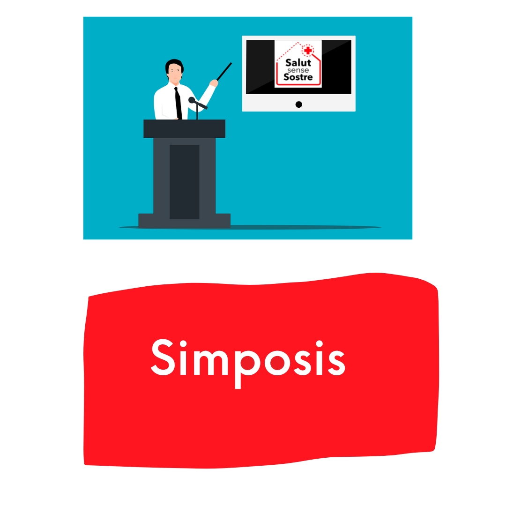
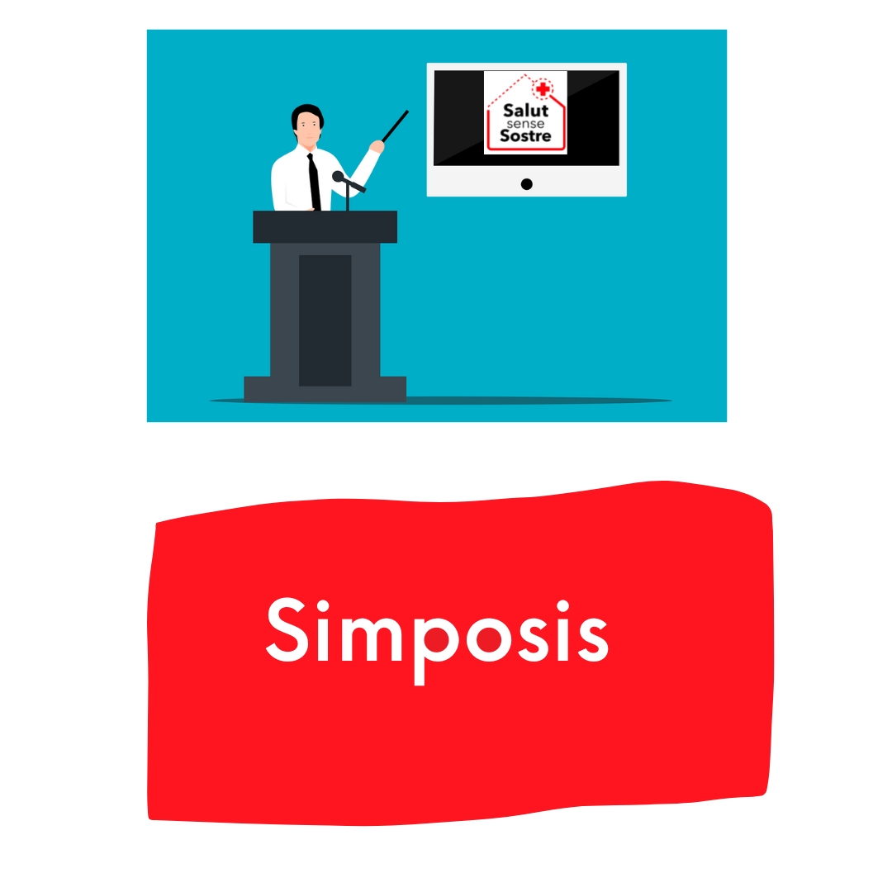

Principals actuacions

 


Les últimes publicacions
Les últimes publicacions
Fem una nova crida. Ens ajudeu a compartir?🙏 pic.twitter.com/QwXEDTzTNE
— Associació Salut Sense Sostre (@salutsensesostr) May 2, 2022
La manca de recursos és evident. Cada dia tenim més feina i més usuaris dissortadament https://t.co/Z9IqVUq5pi
— Associació Salut Sense Sostre (@salutsensesostr) August 22, 2022
Ayer recordamos los 2 años de la muerte de Pedro #Casaldáliga desde su pueblo natal, Balsareny. Y lo hicimos profundizando en una de las Causas por las que dió la vida: la Esperanza Ecológica. La situación de los ríos que amó, el Araguaia y el Llobregat, se unieron con Pedro. pic.twitter.com/cPGsuSJ3v2
— Fundació Pere Casaldàliga (@fpcasaldaliga) August 8, 2022